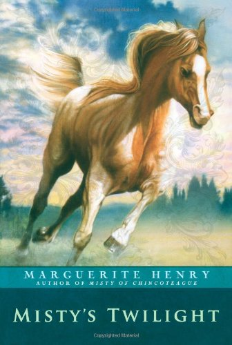

Misty's Twilight
Twilight grew up on Stolen Hours Farm, running wild and free for the first two years of her life. Doctor Sandy and Kathy prepare her for one of the most exciting events of her life. A race that will not be soon forgotten. After some pretty hard and painful training, is she ready to defeat some of the most undefeated horses in the world?
